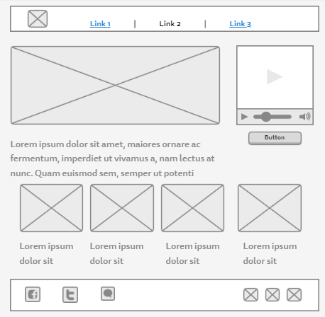
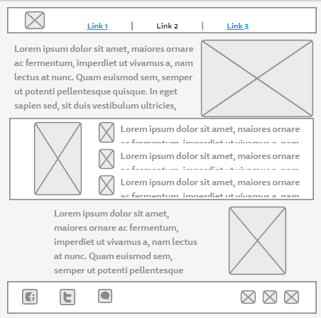
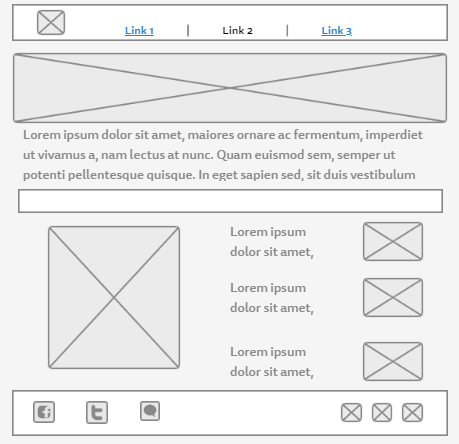

the easiest way to find medical atention
our mission is to help patients with different patologies find health providers
No matter the palce or the time if you need medical atention Doctor XD will help you find a provider which is available and ready to provide you with his services
the best platform for people with medical needs
Wheter you are a parent seeking for a pediatrician, a young woman about to give birth or just looking for a dentist, Doctor XD will help you find the service you are looking for
Branding
Website Logo

Style Guide
Color Palette
Palette URL: https://coolors.co/396e94-e7c24f-a43312-381d2a-aabd8c| Primary | Secondary | Accent 1 | Accent 2 |
|---|---|---|---|
| [#396E94] | [#E7C24F] | [#A43312] |
Typography
Heading Font: IM Fell French Canon SC
Paragraph Font: Lato, Helvetica
Normal paragraph example
Because the love of a mother will never allow someone in her family not to have medical services when they need it, that is why mothers now have suitable help for these unwanted moments.
Colored paragraph example
Enjoying the best clinics with modern equipment and the best professionals in each of the pathologies that are needed in the area of medicine, now it is much easier to find a doctor for ourselves or for any family member.
Navigation
Site Map
Content
Home page
We will make sure the service you need will be available with an outstanding team of providers
Images for the Home page

Medical
Enjoying the best clinics with modern equipment and the best professionals in each of the pathologies that are needed in the area of medicine, now it is much easier to find a doctor for ourselves or for any family member.
Images for the Medical
Emergency
Because we nevefr know when an accident will ocurr, DR XD will locate the nearest available emergency unit to send it riht to your place.
Images for the Emergency
Wireframes
Home
Home of the company and main information about DR XD
[Page 2]
Medical page where the information on how to use the app will take place
[Page 3]
Emergency page where more content about the benefits of the virtual agenda will take place
